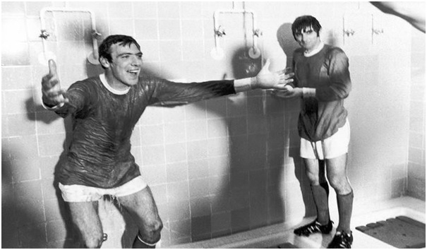
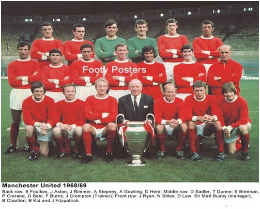

Chương 16

ầu mùa 1966-1967, ba chàng giữ gôn của United tiếp tục những màn trình diễn tệ hại, làm Matt Busby phát chán, bỏ hẳn ra 55000 bảng, mức giá kỷ lục thế giới giành cho thủ môn, mua về Alex Stepney từ Chelsea. Có Stepney, hàng thủ Quỷ Đỏ vững chắc hẳn lên; hàng công thì vẫn bùng nổ như thường lệ. Sau trận thua 1-2 trước Sheffield United vào cuối tháng 12, 1966, CLB đá liền năm tháng không thua, bất bại đến tận cuối mùa. Ngày 6 tháng 5, 1967, tại vòng áp chót giải Hạng Nhất, Law, Best và Charlton cùng nổ súng, giúp United đè bẹp West Ham 6-1, chính thức đăng quang ngôi vô địch.
Không chỉ vô địch, United còn là đội bóng được mến mộ nhất nước Anh, vượt xa những đội bóng lớn khác như Liverpool của Bill Shankly và Leeds của Don Revie. Mùa đó, có đến hơn triệu lượt khán giả đến sân xem các học trò của Matt Busby thi đấu. Mỗi trận đấu tại Old Trafford thu hút người hâm mộ từ khắp mọi nơi: Oxfordshire, Birmingham, Herefordshire, Cornwall…Nhiều fan sống ở thủ đô London cũng lặn lội xuống xem. Đối với CĐV phương xa, mỗi lần tới Old Trafford xem bóng đá là mất cả một ngày, vì phải dậy sớm từ 5-6 giờ đón xe đò hay xe lửa, đến Manchester thì đã trưa, phải xếp hàng thêm 1-2 tiếng nữa mới vô được SVĐ, vừa kịp lúc bóng lăn vào ba giờ chiều. Nhưng đã yêu thì nề hà chi gian khó!
Để đền đáp tình cảm người hâm mộ, và để giữ lời cùng những học trò đã khuất, Matt Busby quyết tâm bằng mọi giá phải giành Cúp C1 năm 1968. Sau Munich, có thể nói chiếc cúp này luôn ám ảnh Busby, trở thành mục tiêu đời ông. Cầu thủ United hiểu rõ tham vọng của thầy, như George Best viết trong hồi ký:
“Với United, chinh phục Cúp C1là cuộc thập tự chinh vinh quang, đã phải trả bằng máu những người tử nạn trong thảm họa Munich. Tại Old Trafford, dường như hình bóng “đồng ấu Busby” luôn phảng phất đâu đây, trông chờ, thúc giục các đàn em. Những cầu thủ như Charlton và Foulkes đã từng trải qua tai nạn, từng tận mắt chứng kiến cảnh đồng đội qua đời trên đường theo đuổi Cúp C1, nên họ càng khát khao cúp ấy hơn bất kỳ ai. Họ muốn giành cúp cho chính mình, mà cũng là cho hương hồn đồng đội.
“Riêng với Sir Matt Busby, Cúp C1 là thánh tích khải hoàn thiêng liêng, là tham vọng của cả cuộc đời. Trong tai nạn, thầy đã bị thương nặng, không còn muốn theo đuổi nghiệp HLV nữa. Chỉ niềm khao khát giành cúp khiến thầy tiếp tục đó thôi.”
Tự tin có thể đoạt cúp với lực lượng sẵn có, Busby không mua thêm bất kỳ ai, chỉ tiếp tục chính sách “cây nhà lá vườn”, gọi từ đội trẻ hậu vệ trái 19 tuổi Francis Burns và tiền đạo 18 tuổi Brian Kidd. Cả hai thích ứng nhanh đến nỗi vừa lên đội một đã chiếm ngay vị trí chính thức.
Đối địch cùng United tại vòng đầu Cúp C1 là Hibernians. Không, không phải Hibernians của Scotland đâu, mà là Hibernians tí hon xứ Malta, đội bóng gồm toàn cầu thủ nghiệp dư, được dẫn dắt bởi một…linh mục! Thua 0-4 tại Old Trafford, fan Malta vẫn vui như tết, kéo nhau hàng ngàn người ra sân bay đón United đến thi đấu trận lượt về. Người Mỹ đón nhóm Beatles cuồng nhiệt thế nào, thì dân Malta đón Quỷ Đỏ nồng nàn chừng ấy, ai ai cũng háo hức được thấy tận mắt bộ ba Law-Best-Charlton. Người hâm mộ bám đuôi đoàn xe United từ phi trường về đến khách sạn, liên tục tung hô, vẫy cờ, ném hoa. Nhiều “fan cuồng” thậm chí đóng đô lại khách sạn, nằm ngồi la liệt cả ngày trước phòng các cầu thủ. Cầu thủ ở trong phòng thì thôi, chứ mở cửa bước ra một bước là ngay lập tức bị bủa vây!
Ngày thi đấu, 25000 khán giả kéo đến chật cứng SVĐ, cổ vũ cho đội khách có phần nhiều hơn đội nhà. Trước đám đông quá…dễ thương, United đá lỏng chân, giúp Hibernians tìm được trận hòa không bàn thắng. Vừa đá xong 90 phút, thấy trên khán đài mọi người chuẩn bị tràn xuống sân, các chú quỷ quên cả xếp hàng chào cám ơn, ai nấy lủi lẹ về phòng thay đồ: Lủi không lẹ mà bị vây quanh, sợ đến cả quần đùi cũng mất!
Vào vòng hai, United gặp FK Sarajevo. Các CLB Nam Tư chưa bao giờ là đối thủ dễ chơi. Năm 1958, United phải rất vất vả mới hạ được Red Star, còn năm 1966, đội bị Partizan đá bay trước ngưỡng thiên đàng. May là Sarajevo yếu hơn nhiều so với hai đồng hương. Tuy mang danh đương kim vô địch Nam Tư, bước vào mùa 1967-1968, họ bị mất đi hàng loạt trụ cột, suy yếu trầm trọng, đang phải vật lộn tránh xuống hạng.
Có điều, đường vào Sarajevo khó ngang đường lên trời. Sân bay Sarajevo thường xuyên bị sương mù bao phủ, đường băng lại rất ngắn, chỉ đón được máy bay nhỏ hai động cơ, nên những tuyến bay thương mại chẳng tuyến nào thèm đến đó. United đành đáp phi cơ đến Dubrovnik, rồi từ đây ngồi xe đò tới Sarajevo. Khoảng cách giữa Dubrovnik và Sarajevo là 200 dặm, lại toàn đường đồi núi khúc khuỷu, quanh co, khiến các cầu thủ bị một phen say xe tơi tả. Trời tối mịt, xe mới tới nơi. Nhìn ánh trăng soi trên bốn bề núi đá, thủ thành Alex Stepney tưởng mình sắp lạc vào lâu đài bá tước Dracula!
Ra quân trận lượt đi, Quỷ Đỏ không có được đội hình mạnh nhất: Denis Law đang bị FA treo giò sáu tuần vì tội đánh nhau, Nobby Stiles và David Herd thì đều chấn thương. Tuy vậy, hiểu rõ đối thủ vẫn ở thế trên cơ, Sarajevo áp dụng chiến thuật tử thủ, đá người thay đá bóng. Cầu thủ United ai nấy đều bị đá cho lăn lóc. “Thật kinh khủng”, Pat Crerand hồi tưởng, “Sarajevo là đội bóng xấu chơi nhất tôi từng gặp”. “Chưa bao giờ thấy Matt Busby giận dữ như thế”, ký giả Frank McGhee của Daily Mirror tường thuật, “đối phương đá láo một cách đáng xấu hổ”. Vì Sarajevo chỉ lo đá người không tấn công, còn United bị đá quá tấn công không được, suốt cả trận có rất ít cơ hội, không bàn thắng nào được ghi.
Lượt về, Sarajevo vẫn “bổn cũ soạn lại”. Song lần này, trước sự cổ vũ của hơn 62000 khán giả nhà, John Aston mở tỷ số ngay phút 11, giúp United phá thế bế tắc. Phút 58, George Best hất tay vào mặt thủ môn Muftic của Sarajevo, nhưng hụt. Dù vậy, Muftic vẫn giả đò ôm mặt, lăn lộn đau đớn. Trọng tài không bị lừa nên không rút thẻ, chỉ có các cầu thủ Sarajevo tưởng thủ môn mình bị đánh thật. Vậy là họ phát khùng, từ đó cứ nhắm George Best mà triệt hạ. Sau một pha vào bóng hết sức thô bạo với Best, Prlyaca bị đuổi khỏi sân, và từ pha phối hợp đá phạt, chính Best nâng tỷ số lên 2-0. Trước khi hết trận, Sarajevo gỡ lại một bàn, nhưng thời gian còn lại quá ít, không đủ cho họ san bằng cách biệt.
Vòng tứ kết, đối mặt với Gornik Zabrze (Ba Lan), Denis Law vẫn vắng mặt. Sau án treo giò, “nhà vua” lại dính chấn thương rất nặng. Các bác sỹ chẩn đoán Law bị tổn thương đầu gối vĩnh viễn; dù có thể tiếp tục thi đấu, anh sẽ thường xuyên bị đau, không bao giờ lấy lại được phong độ ngày xưa. Law không muốn nghỉ, nên suốt từ tháng một đến tháng hai, 1968, anh cắn răng nhịn đau ra sân. Đến trước trận gặp Gornik tại Old Trafford, nhịn không nổi nữa, Law phải đến bệnh viện, nhờ tiêm thuốc giảm đau. Tiêm xong, về đến nhà, chân Law sưng lên như quả bóng. Hóa ra anh bị dị ứng thuốc. Lúc bấy giờ, trong nhà vắng tanh không có ai, chân lại sưng không thể đi, Law đành bò lết từ trên gác xuống tầng trệt, gọi điện thoại thông báo cho CLB biết tình hình thương tích. Không những nghỉ tứ kết mà thôi, anh sẽ phải đóng vai khán giả trong hầu hết hành trình còn lại của Quỷ Đỏ ở Cúp C1.
Nhắc đến Gornik Zabrze, độc giả ngày nay chả ấn tượng gì, nhưng vào thập niên 1960, đó là đội bóng thống trị Ba Lan. Lại nên nhớ trong thời kỳ Chiến Tranh Lạnh, các cầu thủ ngôi sao Đông Âu đều thi đấu trong nước, không đổ xô sang Tây Âu như bây giờ, nên những đội bóng hàng đầu Đông Âu đều sở hữu lực lượng rất đáng nể[1].Trên sân Old Trafford, Gornik dàn thế trận thiên la địa võng, phòng thủ cực kỳ chắc chắn, thủ môn Kostka của họ thì bay lượn như chim, cứu mọi bàn thua. United tấn công dồn dập, hết đợt này đến đợt khác, chỉ trong hiệp một đã được hưởng đến 16 cú phạt góc. Thế nhưng, từng đợt tấn công cứ như sóng dội vào đá, liên tục bật ngược trở ra. Mãi đến phút 61, nhờ pha đá phản lưới nhà của hậu vệ Florenski, Quỷ Đỏ mới khai thông được thế trận. Rồi một phút trước khi hết giờ, Brian Kidd đánh gót từ vị trí cách khung thành…16m. Bằng cách nào đó, như con voi chui lọt lỗ kim, bóng vượt qua cả một rừng chân, xuyên vào trong lưới. Thủ thành Kostka bị che tầm nhìn, không kịp phản ứng. Bàn thắng của Kidd vô cùng quan trọng, bởi United “cóng giò” trước thời tiết đông giá, khắc nghiệt ở Ba Lan, thất bại 0-1 trong trận lượt về.
Cùng vào bán kết với United có Juventus, Benfica và Real Madrid. Lá thăm run rủi khiến Quỷ Đỏ gặp đúngReal, đội bóng cùng họ mang nặng ân tình. Ân tình là vì sau thảm họa Munich, Real đài thọ cho nhiều cầu thủ United sang TBN nghỉ dưỡng miễn phí, đồng thời luôn quan tâm, giúp đỡ Matt Busby và học trò. Thời điểm cuối những năm 1950, đầu 1960, đội hình Real là một dải ngân hà lấp lánh những vì sao, ai muốn mời họ đá giao hữu phải trả ít nhất 12000 bảng. Vậy mà trong khoảng 1959-1962, năm nào CLB hoàng gia TBN cũng sang Anh thi đấu hữu nghị cùng United, lấy phí giá rẻ có 6000/trận. Mỗi lần gặp Real, Old Trafford đều chật kín khán giả, đem về cho Man đỏ lợi nhuận rất lớn.
So với dải ngân hàtrắng từng 5 lần liền giành Cúp C1, Real hiện tại dĩ nhiên không bằng, nhưng họ vẫn rất mạnh, vừa năm 1966 còn vô địch Châu Âu. Bobby Charlton và Bill Foulkes là hai cầu thủ còn lại từ đội hình United thất thủ trước Real năm 1957, trong khi phía Real chỉ còn mỗi lão tướng Gento. Khác với 11 năm trước, lần này đội thắng lượt đi là CLB Anh, nhờ bàn duy nhất của George Best. Chào mừngUnited đến Madrid đá trận lượt về, chủ tịch Santiago Bernabeu giành cho đội khách những lời nồng ấm: “Hãy cùng đón chào và trân trọng Manchester United, CLB lớn nhất thế giới. Đã từ lâu, hai đội bóng chúng ta là bạn bè hữu hảo của nhau. Thứ tư này, dù Real Madrid có thất bại, cũng là thất bại dưới tay một đối thủ vĩ đại”.
Tuy nhiên, đánh bại Real trên thánh địa Bernabeu chẳng phải việc dễ dàng. Ngay từ phút đầu, đội chủ nhà đã dồn lực tấn công ào ạt. Lần lượt Pirri, rồi Gento đưa Real vượt lên dẫn 2-0. Zoco phản lưới nhà, giúp United gỡ lại một trái, nhưng Amancio, người kế tục Di Stefano, tái lập khoảng cách hai bàn ngay trước khi hiệp một kết thúc. 45 phút đầu, thế trận hoàn toàn thuộc về Real; United chơi như không sức sống, Charlton và Best chỉ là cái bóng của chính mình.
Giữa giờ nghỉ, cầu thủ Man đỏ ngồi rũ rượi trong phòng thay đồ, đầu cúi gằm. Không ai nói cùng ai, tất cả đều chung ý nghĩ: Thế là xong, hết cả rồi! Lại lần nữa tan giấc mơ vô địch. Từng phút một trôi qua trong im lặng, rồi Matt Busby mở cửa bước vào. Các học trò ngẩng lên, chờ đợi cơn giận dữ từ thầy. Nhưng không, Busby vẫn điềm tĩnh như thường lệ, không một nét giận, nét lo nào hiện trên khuôn mặt. “Không sao, cố gắng lên nào”, ông khích lệ.
Dường như chẳng ai nghe ông nói:Cố gắng, cố gắng cái gì, còn gì nữa mà đá?
“Đừng tuyệt vọng”, Busby nói chậm rãi, nhấn mạnh từng chữ, “Hãy nhớ George đã ghi một bàn ở Old Trafford, nên tỷ số bây giờ là 3-2 chứ không phải 3-1 đâu. Mình chỉ cần ghi thêm một trái nữa thôi”.
Mặt các cầu thủ bỗng sáng hẳn lên: À há, đúng là mất tinh thần nên mất cả khôn. Điều đơn giản như thế mà thầy phải nhắc mới nhớ!
“Hiệp một mình thủ kém quá”, Busby lại tiếp, “Ngay đầu hiệp hai phải chuyển sang tấn công. Đừng cuống lên, cứ từ từ, bình tĩnh mà tấn công. Đừng đứng đợi bóng, phải tích cực tranh chấp. Quan trọng nhất là đừng sợ thua, đã đang thua rồi, có thua thêm sáu trái nữa cũng vậy thôi.”
Gánh nặng trên lưng cầu thủ bỗng dưng bay biến: Phải rồi, thua thì đã thua, buồn có ích gì? Tại sao không thoải mái tấn công, khi chẳng còn gì để mất? Hiệp hai vừa bắt đầu, họ chuyển thủ sang công, trong khi Real cho rằng khoảng cách đã an toàn, nên lui về bảo vệ tỷ số. Nghe lời thầy, Nobby Stiles bỏ nhiệm vụ theo kèm Amancio, lao lên hỗ trợ hàng tiền đạo, làm Bill Foulkes bên dưới cứ phải la lên oai oái: “Về ngay đây. Dù sao cũng vẫn phải thủ chứ”.
Chẳng ai nghe lời Foulkes. Từ một phaphối hợp đá phạt, David Sadler ghi bàn, rút ngắn tỷ số xuống 2-3[2]. Đến nước ấy, Foulkes cũng không đứng yên được nữa. Phút 78, nhân United được hưởng ném biên bên cánh phải, lão tướng này cắm đầu chạy lên. Trước giờ Foulkes hiếm khi tấn công, trừ những tình huống phạt góc,nay bỗng xảy ra chuyệnlạ lùng, làm ai cũng phát hoảng. “Anh làm cái trò gì thế?”, Stiles hét. Denis Law ngồi ngoài sân cũng gào khản cổ: “Chạy về, chạy về, Foulkes ơi!”
Trong khi ấy, Crerand ném biên đến George Best. Dùng kỹ thuật cá nhân lừa qua hai cầu thủ Real, Best thoáng thấy một bóng áo đỏ trong vòng cấm địa, bèn chuyền vào. Bóng vừa rời chân, Best nhận ra mình vừa kiến tạo cho…Foulkes. “Thôi chết rồi”, anh than thầm, “Biết vậy thà sút luôn”. Bobby Charlton đứng đằng sau cũng ngao ngán: “Ôi thế nào nó cũng sút vọt xà ngang”. Không ngờ Foulkes lại bình tĩnh lạ lùng, không “bắn chim” như trên sân tập, mà nhẹ nhàng đệm bóng vào góc xa ghi bàn, chuẩn không thua tiền đạo thứ thiệt.
“Đẹp quá, Bill ơi!”, trên hàng ghế dự bị, Denis Law nhảy cẫng, tay vung lên trời, đụng đánh cốp vào mái kim loại ở trên, gẫy mất đốt xương!
Foulkes ghi bàn xong, liền vội vã chạy về, nhìn Nobby Stiles cười khì khì: “Thấy chưa? Khi cần lên thì phải lên chứ!”

David Sadler và George Best ăn mừng trong phòng tắm sau trận hòa Real Madrid 3-3 (Ảnh: Manchestereveningnews.co.uk)
Real rơi đài, chắn giữa Manchester United và ngôi bá chủ Châu Âu giờ chỉ còn Benfica. Hiển nhiên, CLB BĐN không phải dễ xơi; họ chính là đội bóng giàu thành tích nhất tại Cúp C1 trong thập niên 1960: cùng hai lần vô địch (1961, 1962), ngang với Real Madrid (1960, 1966), Inter Milan (1964, 1965), và AC Milan (1963, 1969), nhưng hơn về số lần hạng nhì (ba lần). Tuy vậy, gặp Benfica, United cảm thấy thoải mái về tâm lý, vì mới năm 1966, đội từng đè bẹp đối thủ này 5-1. Cùng năm đó, Nobby Stiles đã kèm chết Eusebio ở World Cup, anh tự tin mình có thể hoàn thành trách nhiệm thêm lần nữa.
29 tháng 5, 1968 là một ngày lịch sử. Trước 100000 khán giả cuồng nhiệt tại Wembley, và khoảng 250 triệu người xem truyền hình trên khắp toàn cầu, Manchester United ra sân trong trang phục toàn xanh, nghênh đón Benfica trong trang phục toàn trắng. Benfica cử hẳn hai hậu vệ theo kèm George Best, còn United cắt Stiles đeo bám Eusebio. Hai bên đều quá thận trọng, khiến hiệp một diễn ra không mấy hấp dẫn. Ngoài cú sút dội xà ngang của Eusebio, và pha đá ra ngoài rất vô duyên trong thế đối mặt thủ môn của David Sadler, không còn cơ hội nào khác trong 45 phút đầu.
Sang hiệp hai, ưu thế bắt đầu nghiêng về United. Phút 53, nhận thấy Sadler có bóng bên cánh trái, Bobby Charlton thâm nhập vòng cấm địa, chạy về góc gần, định bụng kéo giãn hàng thủ Benfica, tạo thời cơ cho đồng đội ở góc xa ghi bàn. Song le, Sadler lại tạt bóng đúng vào chỗ Charlton. Hơn 10 năm chưa ghi bàn trong các pha không chiến, song đúng thời khắc ấy, Charlton bật cao, lắc đầu tuyệt đẹp, không cho thủ môn đối phương cơ hội cản phá nào.
Bị thủng lưới trước, Benfica buộc phải dồn lên tấn công. Hai đội đôi co, làm thế trận hấp dẫn hẳn lên. Phút 80, hàng hậu vệ United lo theo Eusebio, để khoảng trống cho Graca dứt điểm, gỡ hòa 1-1. Phút 87, đến lượt Eusebio đối mặt Stepney, tung sút như búa bổ. Tuy lực sút cực mạnh làm Stepney bị bắn ra sau, anh vẫn ôm gọn bóng, cứu cho đội nhà một bàn thua trông thấy. Trước pha cản phá quá xuất sắc của Stepney, “hắc báo” phải vỗ tay khen ngợi.
Bước vào 30 phút hiệp phụ, các cầu thủ United thấm mệt, song nhìn sang Benfica, ai cũng tự tin sẽ giành chiến thắng, bởi đối phương trông còn mệt hơn gấp bội, có vẻ như chạy không nổi nữa. Quả vậy, thế trận trong giờ đấu thêm hoàn toàn thuộc về Quỷ. Phút 92, George Best “xỏ kim” Jacinto, sau đó tiếp tục đảo bóng qua thủ môn Benfica, trước khi dứt điểm vào lưới trống. Phút 94, Brian Kidd đánh đầu, nâng tỷ số 3-1. Hôm đó chính là sinh nhật Kidd, và bàn thắng này là bàn thứ 17 anh ghi trong mùa giải: thành tích trong mơ cho cầu thủ mới năm đầu lên đội một. Nhưng Kidd chưa dừng ở đó. Phút 99, anh dốc bóng thần tốc bên cánh phải, tạt vào cho Charlton dứt điểm cận thành, ghi bàn cuối cùng của trận đấu.
Tiếng còi dứt trận vang lên. Các cầu thủ áo xanh bật khóc nức nở vì hạnh phúc. Matt Busby cười thật tươi, rạng rỡ như tỏa hào quang. Ông bước vội ra sân, chúc mừng học trò, rồi ôm thật lâu Charlton và Foulkes. Ba thầy trò bên nhau, nước mắt lăn dài trên má, hồi tưởng lại chặng đường 10 năm đầy gian khó. Busby ngước nhìn trời, lòng thanh thản, nhẹ nhàng. Với danh hiệu vô địch châu Âu, United đã hoàn tất công cuộc tái sinh, gánh nặng trong ông từ nay trút bỏ!
United không phải CLB bóng đá duy nhất lâm cảnh thảm họa hàng không. Tháng 5, 1949, máy bay chở Torino, đội bóng vĩ đại vừa bốn lần liên tiếp vô địch Serie A, rơi ở Superga, trên đường từ Lisbon về Turin, toàn bộ hành khách trên khoang tử nạn. Vụ tai nạn gây chấn động toàn cầu, nhưng nay ít người nhớ đến.Thiên hạ ghi nhớ Munich, mà ít nhiều lãng quên Superga, là vì Torino không bao giờ tái sinh. Sau vụ rớt máy bay, CLB được các đội bạn cảm thương nhường cho, nên toàn thắng bốn trận còn lại ở giải Ý, bảo vệ thành công ngôi vô địch. Song từ mùa sau, họ dần dần đi lùi, rớt xuống Serie B năm 1959, và từ đó trở đi an phận một đội bóng trung bình. Manchester United khác biệt hoàn toàn: 10 năm sau thảm họa, đội không xuống hạng mà đạt đến một tầm cao mớidưới quyền Matt Busby, trở thành CLB Anh đầu tiên trong lịch sử giành Cúp C1, chẳng khác phượng hoàng vươn lên từ đống tàn tro.
Có người nói trong kỷ nguyên Busby, United có ba thế hệ cầu thủ: Thế hệ thứ nhất giành Cúp FA 1948 và chức VĐQG 1952, do Busby kế thừa từ Walter Crickmer; thế hệ thứ hai là “đồng ấu Busby” do đích thân ông đào tạo; thế hệ thứ ba, với đỉnh cao là Cúp C1 1968, do ông bỏ tiền ra mua. Muốn biết nhận định cuối cùng đúng hay sai, hãy nhìn vào đội hình Quỷ Đỏ giành Cúp C1, bao gồm: Alex Stepney (thủ môn), Shay Brennan, Bill Foulkes, David Sadler, Tony Dunne, Pat Crerand, Bobby Charlton (đội trưởng[3]), Nobby Stiles, George Best, Brian Kidd và John Aston. Trong 11 cầu thủ trên, chỉ Stepney, Dunne và Crerand được mua về, tám người còn lại đều trưởng thành từ đội trẻ. Như vậy, rõ ràng Busby vẫn trung thành với triết lý của mình, thế hệ thứ ba cơ bản vẫn là tự đào tạo, có thể gọi bằng cái tên “đồng ấu Busby phiên bản 2.0”.
Sáng giá nhất trong phiên bản 2.0 không ai ngoài George Best. Với phong độ rạng ngời năm 1968, anh được trao danh hiệu Quả Bóng Vàng Châu Âu (Bobby Charlton về nhì). Ở tuổi 22, Best khi ấy là cầu thủ trẻ nhất giành phần thưởng cao quý này. Tính ra, từ 1964 đến 1968, cứ hai năm, Quỷ Đỏ lại có cầu thủ giành Quả Bóng Vàng. Xét về danh hiệu tập thể, Matt Busby kém Alex Ferguson, chứ về danh hiệu cá nhân, United của ông vượt trội hẳn hậu bối.
Về mặt quốc nội, George Best thâu tóm cả hai phần thưởng: Cầu Thủ Xuất Sắc Nhất NướcAnh (FWA) và Vua Phá Lưới giải VĐQG (28 bàn[4], ngang với Ron Davies củaSouthampton). Tại giải VĐQG, United chỉ về nhì, xếp sau kình địch Manchester City, song người hâm mộ không mấy phiền lòng. Một khi đã giành Cúp C1, ai quan tâm tới cúp Hạng Nhất? Nhờ chiến tích C1, thầy trò Busby được đài BBC bình chọn là Đội Thể Thao Xuất Sắc Nhất Đại Anh Quốc năm 1968.

Manchester United bên Cúp C1 1968 (Ảnh: Footyposters.com.uk)
Chú thích:
[1]Trước khi đụng United, Gornik đã loại một CLB Đông Âu khác: Dinamo Kiev của Liên Xô, mà chính Kiev là đội đá bay đương kim vô địch Celtic.
[2] Nếu tỷ số giữ nguyên, hai đội sẽ phải đấu thêm trận thứ ba, vì Cúp C1 mùa đó chưa áp dụng luật nhân hai bàn thắng sân khách.
[3] Từ 1968, Bobby Charlton thay Denis Law mang băng thủ quân.
[4] 32 bàn tính tất cả các giải.